Helden › Brawler
Abrams
Abrams ist ein spielbarer Held in Deadlock. Der bullige Privatdetektiv gehört zur Klasse der Brawler: Er sucht die kürzeste Route ins Zentrum des Gefechts, hält dank enormer Selbstheilung erstaunlich lange durch und drängt Gegner mit Schulterrammen und Bodenschlägen aus der Position. Für Neueinsteiger gilt er als einer der zugänglichsten Helden des Spiels.
Hintergrund
Hart im Nehmen, hart im Austeilen und hart im Trinken: Detective Abrams ist seit Jahren eine feste Größe der New Yorker Ermittlerszene. Ob gestohlene Kunst, vermisste Personen oder Ritualmorde — Abrams nahm nicht einfach jeden Fall an, der auf seinem Schreibtisch landete … er löste sie.
Seine Tage als Verfolger untreuer Ehepartner endeten an dem Morgen, an dem er seine Bürotür öffnete und den Folianten auf seinem Schreibtisch vorfand. Eine Anleitung lag nicht bei — nur eine hastig in Onyxblut gekritzelte Notiz:
„Lass es ihnen nicht in die Hände fallen.“ — Unbekannt, hinterlassen beim Folianten
Woher das Ding stammt, hat Abrams bis heute nicht herausgefunden. Aber nachdem in seine Wohnung eingebrochen, sein Büro dreimal durchwühlt und sein Wagen mit einer Brandbombe bedacht wurde, hat er ein sehr persönliches Interesse daran entwickelt, herauszufinden, was zur Hölle hier eigentlich vor sich geht.
Spielstil
Abrams bringt die Masse und die Ausdauer mit, um von vorn zu führen — oft rennt er mitten in die gegnerischen Reihen und sieht zu, wie sie auseinanderstieben. Verschwenden die Gegner ihr Feuer auf ihn, kann seine Backline ungestraft Schaden austeilen.
Seine Schrotflinte entfaltet auf kurze Distanz enorme Wirkung, und Siphon Life macht ihn in längeren Handgemengen fast unverwüstlich. Typische Item-Builds verstärken Lebensraub und Nahkampfschaden — etwa über Bullet Lifesteal oder Colossus.
Fähigkeiten
Siphon Life
Taste 1 KanalisiertEntzieht Gegnern in der Nähe Lebenskraft: fügt Geist-Schaden über Zeit zu und heilt Abrams für einen Teil des verursachten Schadens.
Herzstück seiner Durchhaltefähigkeit im Lane-Duell und im Teamkampf.
Shoulder Charge
Taste 2 MobilitätStürmt nach vorn und reißt getroffene Gegner mit. Endet der Sturm an einer Wand, werden sie dort betäubt — die klassische Eröffnung für einen Nahkampf-Kombo.
Funktioniert auch als Fluchtwerkzeug, wenn der Einstieg doch zu mutig war.
Infernal Resilience
Taste 3 PassivVerleiht dauerhaft defensive Boni: Ein Teil des erlittenen Schadens wird über Zeit regeneriert, statt sofort verloren zu gehen.
Der Grund, warum sich Abrams-Duelle oft länger anfühlen, als der Lebensbalken vermuten lässt.
Seismic Impact
Taste 4 UltimateSpringt hoch in die Luft und kracht auf die Zielzone nieder: Gegner im Umkreis erleiden Geist-Schaden und werden kurz in die Höhe geschleudert.
Ideal, um verschanzte Gegner hinter Deckung aufzuscheuchen oder einen Teamkampf zu eröffnen.
Basiswerte
| Wert | Basis (Stufe 1) | Kategorie |
|---|---|---|
| Maximale Gesundheit | 800 | Vitalität |
| Gesundheitsregeneration | 1,5 / s | Vitalität |
| Lauftempo | 6,4 m/s | Bewegung |
| Sprint-Bonus | +1,6 m/s | Bewegung |
| Ausdauer | 3 | Bewegung |
| Leichter Nahkampfschaden | 50 | Waffe |
| Schwerer Nahkampfschaden | 116 | Waffe |
Beliebte Builds
Diese Daten stammen direkt aus dem Build-Browser im Spiel: die drei meistfavorisierten Builds für Abrams, sortiert nach der Zahl der Spieler, die sie gespeichert haben. Klick einen Build an, um die Item-Reihenfolge zu sehen.
№1 treemeister abrams 254.919 Favoriten
„basic abrams melee/gun build“
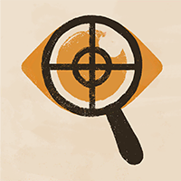
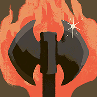
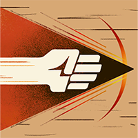
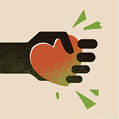
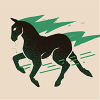
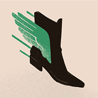
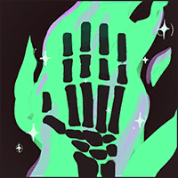
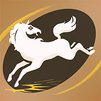
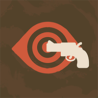
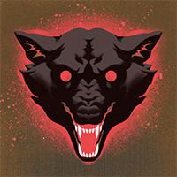
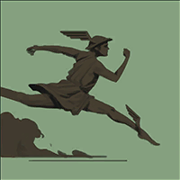
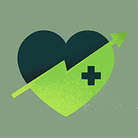
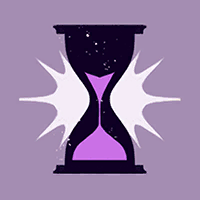
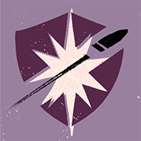
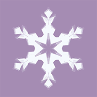
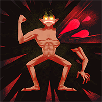
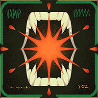
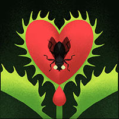
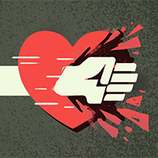
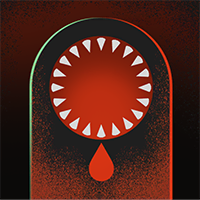
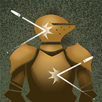
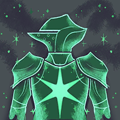
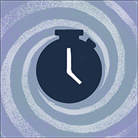
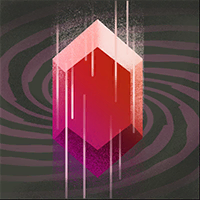
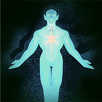
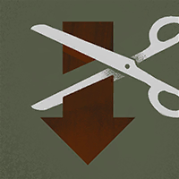
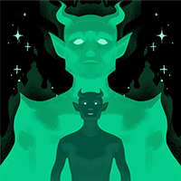
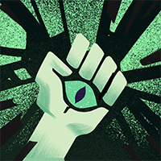
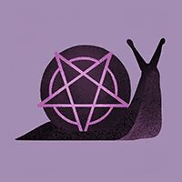
№2 Punchy McPuncherson Build by Seba - 8/1/24 56.885 Favoriten
„Check discord for more info about the build! Skill Order: 3 3 1 1 2 4 4 -> Max 1 -> Max 2 Scroll down to see tips on different phases of the game. Kind Regards, -Abam“
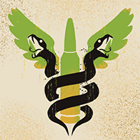
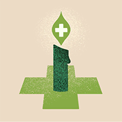
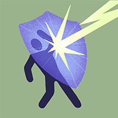
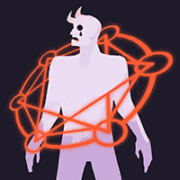
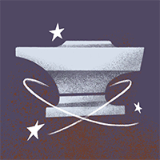
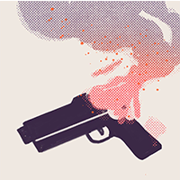
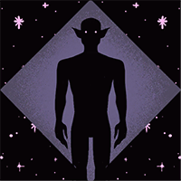
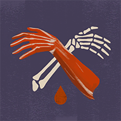
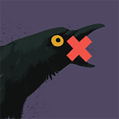
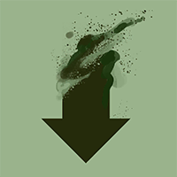
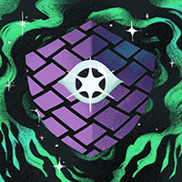
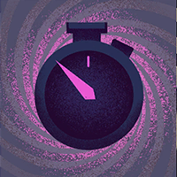
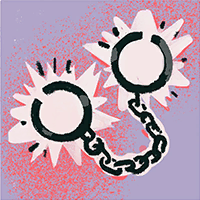
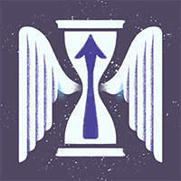
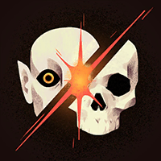
№3 salty abrams 32.278 Favoriten
„Abrams build i like to run will keep updated (4/21/2026) twitch.tv/saltytaba“
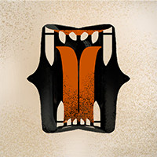
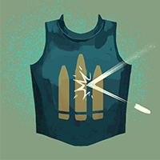
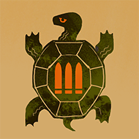
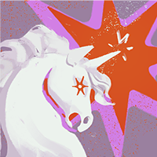
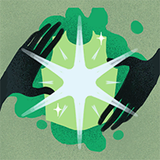
Warum sind das die besten Builds?
Die drei Builds wurden zusammen über 344.082-mal von Spielern gespeichert — Favoriten sind das stärkste Qualitätssignal im Build-Browser, denn ein Build, den so viele Spieler über Monate und Patches hinweg behalten, hat sich in echten Matches bewährt. Auffällig ist der hohe Anteil an Vitalitäts-Items: Abrams steht mitten im Gefecht — jede Sekunde, die der Held länger lebt, ist gewonnener Schaden und Raum fürs Team. Als Einstieg gilt: Folge der Item-Reihenfolge des №1-Builds Kategorie für Kategorie und passe erst mit wachsender Erfahrung an dein Matchup an.
Galerie
Standard-Heldenkarte Triumph-Pose nach gewonnener Runde Karte im kritischen Zustand
Hintergrund-Artwork aus der Heldenauswahl
Trivia
- Abrams' interner Klassenname in den Spieldaten lautet
hero_bull— „der Bulle“, eine Anspielung auf seinen Spielstil und seinen Beruf. - Die Spieldaten führen ihn mit den Tags Tank, Brawler und Bull-Headed („sturköpfig“).
- Mit einer Komplexität von 1 von 3 wird er im Spiel ausdrücklich als Einsteiger-Held geführt.